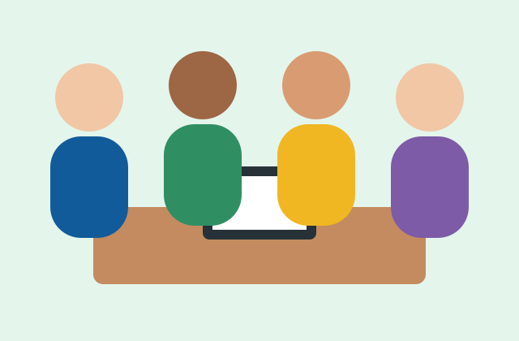
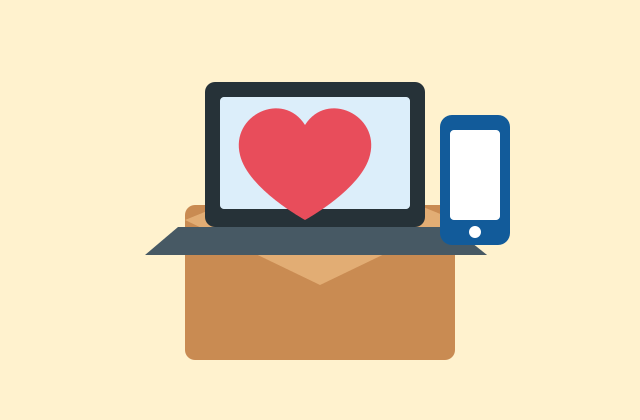

Oficinas de inclusão digital
Ensinamos o uso básico de celulares, computadores, e-mail, serviços públicos e ferramentas de busca de emprego.
Conheça nossas ações e descubra como ajudar a ampliar a inclusão digital.
Ensinamos o uso básico de celulares, computadores, e-mail, serviços públicos e ferramentas de busca de emprego.
Orientamos os participantes a criar senhas seguras, reconhecer golpes e proteger seus dados pessoais.

Os voluntários podem colaborar de diferentes maneiras:

As contribuições ajudam na compra e manutenção de equipamentos, no acesso à internet e na produção de materiais para as oficinas.
Também recebemos computadores e celulares usados que estejam funcionando.
Quero contribuir